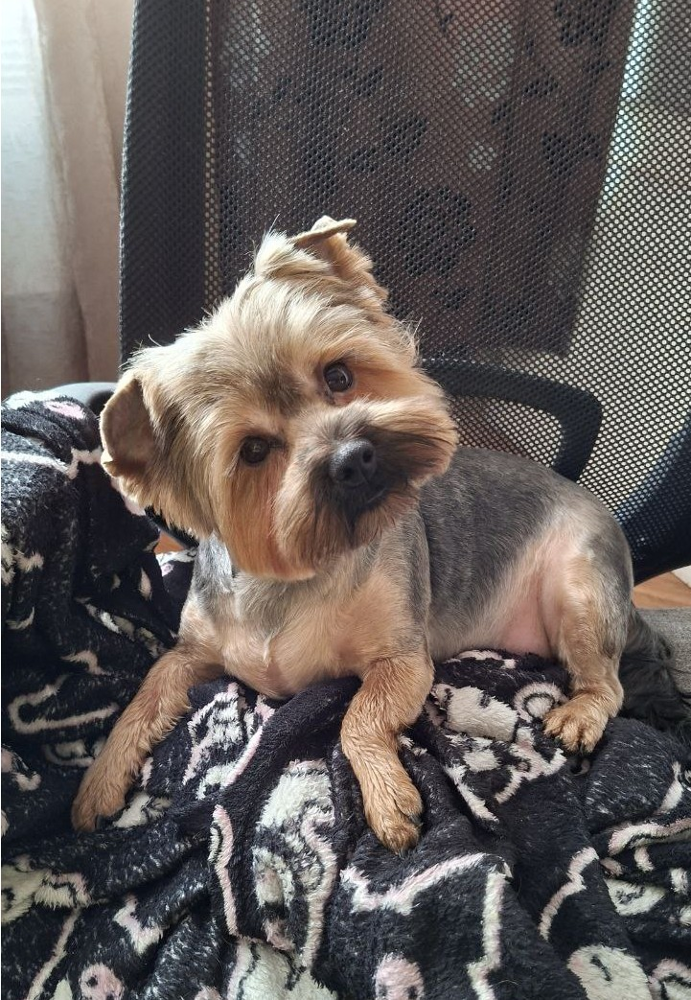

Аля

Пу-пу-пу... Цікава собача особистість. Аля дуже цінує особистий простір коли відпочиває, ніколи не ляже поряд спати. Тим не менш попри все на світі любить увагу та їсти. Якщо, боронь боже, стоячи з нею в черзі за кавою, хтось поряд почне говорити оцим "сюсюкатєльним" голосом - пиши пропало, треба буде чекати поки людині яка звернула на неї увагу не набридне її гладить і пречитать яка ж то хороша собака. Аля годинами може тішитись увазі незнайомців, але з собаками вона хоч і теж дуже дружелюбна, проте втомлюється значно швидше, коли вона вже "награлась" - підходить проситись до мене на ручки. Дуже любить чухання за вушком, обожнює сидіти на ручках і дивитись "домашні летсплеї", ставлячи лапки на стіл і затуляючи мені пів екрану своєю головешкою
тут ця кнопочка нічого не зробить, але Аля буде в захваті від прояву уваги